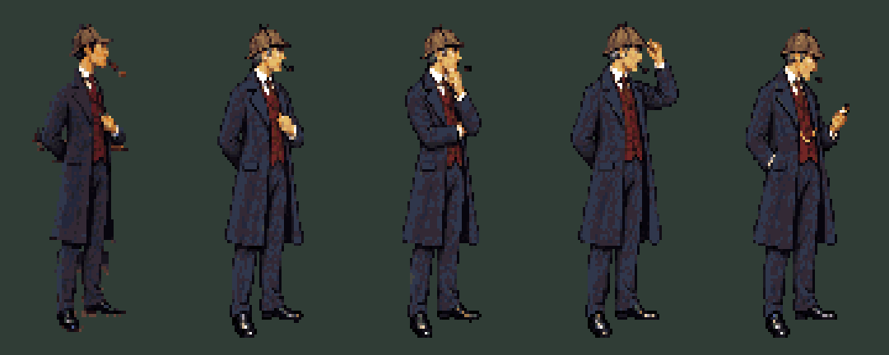
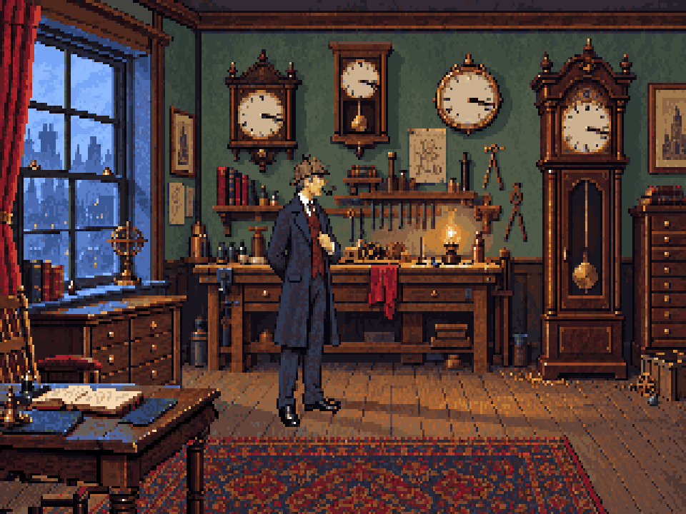

The previous added-limb method was rejected. Each new pose below is a complete re-render: shoulders, torso, arms, coat folds and weight are drawn together. These are key poses for anatomy review, not animation cycles.
1895 costume pass: dark clay pipe, wool tailoring, fuller trousers, grey temples and the retained deerstalker. Sources and design choices.


Same 64-colour palette and approximately 106-pixel figure height. The conversion uses one scale for all four complete figures. It does not paste parts from the old sprite onto the new poses.
Method and source notes · Exact costume-revision prompt · Conversion measurements